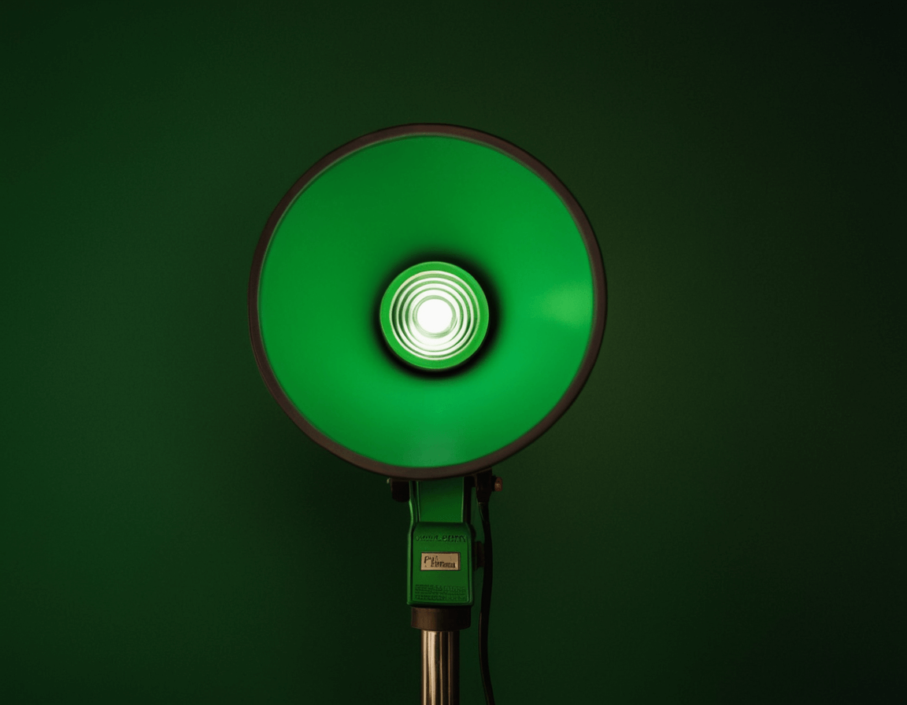

New Live
.08:30 am / 30 Abril / 2025Compartir
Tiulo - Plantilla de Contendio
Descripción: El título debe ser breve, atractivo y descriptivo. Debe captar el interés del lector o espectador y dar una idea clara sobre el tema del contenido
Introducción
Una frase impactante o una pregunta que intrigue al lector/espectador el gancho inicial es la primera impresión que das al lector. Puede ser una estadística sorprendente, una cita relevante, una pregunta intrigante, o una declaración provocadora que despierte la curiosidad.
Contexto: Explica brevemente de qué trata el contenido y por qué es importante o interesante. Proporciona el contexto necesario para que el lector entienda el tema
Objetivo: Deja claro qué puede esperar el lector al continuar leyendo o viendo el contenido. Establece las expectativas y el propósito del artículo o pieza multimedia.
Primer Segmento
Subtitulo: Breve resumen del primer punto Un subtítulo claro y conciso que introduce el primer punto clave del desarrollo.
- Texto: Detalla el primer punto con información clave.Expande el primer punto con detalles, datos, ejemplos, o estadísticas relevantes. Mantén el contenido claro y enfocado.
- Multimedia: Añade imágenes, videos, gráficos o audio que complementen el texto. Integra contenido multimedia que apoye y enriquezca la información presentada en el texto. Asegúrate de que esté bien alineado con el contenido.
- Transición: Enlace al siguiente segmento. Utiliza una frase de transición que conecte este segmento con el siguiente, asegurando un flujo coherente.
Segundo Segmento
Subtitulo: Breve resumen del segundo punto. Un subtítulo claro y conciso que introduce el segundo punto clave del desarrollo.
- Texto: Detalla el segundo punto con información clave. Expande el segundo punto con detalles, datos, ejemplos, o estadísticas relevantes. Mantén el contenido claro y enfocado.
- Multimedia: Añade contenido multimedia relevante. Integra contenido multimedia que apoye y enriquezca la información presentada en el texto. Asegúrate de que esté bien alineado con el contenido.
- Transición: Enlace al siguiente segmento. Utiliza una frase de transición que conecte este segmento con el siguiente, asegurando un flujo coherente.
Tercer Segmento
Subtitulo: Breve resumen del tercer punto Un subtítulo claro y conciso que introduce el tercer punto clave del desarrollo.
- Texto: Detalla el tercer punto con información clave. Expande el tercer punto con detalles, datos, ejemplos, o estadísticas relevantes. Mantén el contenido claro y enfocado.
- Multimedia: Añade contenido multimedia relevante. Integra contenido multimedia que apoye y enriquezca la información presentada en el texto. Asegúrate de que esté bien alineado con el contenido.
- Transición: Enlace a la conclusión. Utiliza una frase de transición que conecte este segmento con la conclusión, asegurando un flujo coherente.
Conclusión
Resumen: Recapitula los puntos principales del contenido Haz un breve resumen de los puntos clave discutidos en el artículo o pieza multimedia. Refuerza los mensajes principales.
Reflexión Final: Ofrece una reflexión o llamado a la acción. Incluye una reflexión que invite al lector/espectador a pensar más profundamente sobre el tema o un llamado a la acción que los motive a actuar.
Cierre: Termina con una frase memorable o una pregunta para fomentar la interacción. Finaliza con una frase que deje una impresión duradera o una pregunta que invite a la participación del lector/espectador en los comentarios o discusiones.
Referencias (si aplica)
Enumera todas las fuentes y referencias que utilizaste para crear el contenido. Asegúrate de citar adecuadamente cualquier material externo que hayas utilizado para respaldar tus puntos
- Referencia a ( # ):
- Referencia a ( # ):
- Referencia a ( # ):
- Referencia a ( # ):
Razon o objetivo de la referencia ya sea por trabajo, aportes o menciones
Razon o objetivo de la referencia ya sea por trabajo, aportes o menciones
Razon o objetivo de la referencia ya sea por trabajo, aportes o menciones
Razon o objetivo de la referencia ya sea por trabajo, aportes o menciones